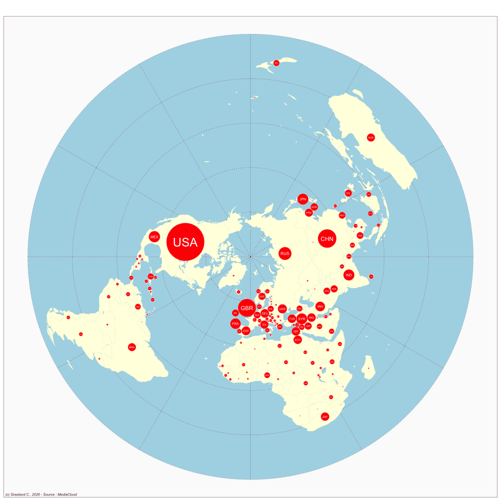

Canada
- Website : Toronto Star
Scale
- Global
- National
Topics
- General news
- Political news
- Economic news
Publications
Stoddart MC, Haluza-DeLay R, Tindall DB. 2016. Canadian news media coverage of climate change: Historical trajectories, dominant frames, and international comparisons. Society & Natural Resources 29: 218–232